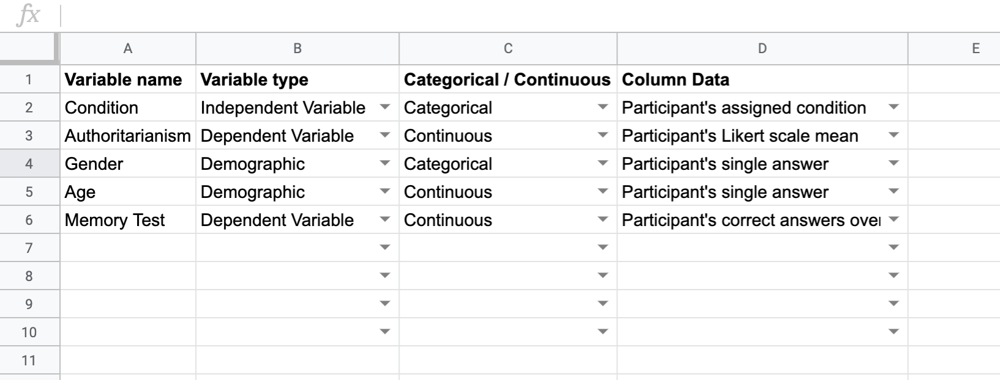
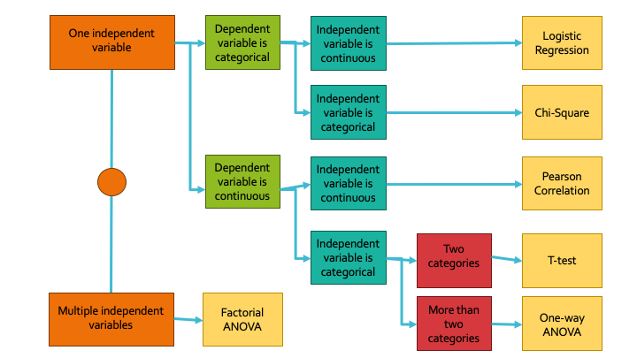

Step 2: Set Goals
You are in control of your experiment and the analysis, not the other way around. Here we think through what our goals are, what steps we need to take, and what factors we need to take into account along the way.
Make a list of your variables
Start a chart
Make a chart where, for each variable you collected in your experiment, you specify:
- The name of your variable for reference
- Whether the variable, in the structure of your experiment, is an independent variable, a dependent variable, or a demographic (see below if you need help distinguisting these)
- Whether the variable, as you want to analyze it (not necessarily how you collected it), should be a categorical variable or a continuous variable (see below for help distinguisting these as well).
- Imagine you only ran one subject; what information should the data column for this variable look like? Is it a mean score, a raw number, a percentage or proportion of correct answers, an assigned item, or something else?
You should get something that looks like this:
You can make a copy of a template availale here:
Experimental Variable SheetTypes of Variables
Independent vs Dependent
Independent Variables
Independent variables are what would go on your x-axis if you drew a graph of your data. They are what "predicts" the dependent variable in your hypothesis. Anything you as the researcher have control over (like experimental condition) is an independent variable. Demographic modifiers are also a type of independent variable, because they are posed as predictive in the context of the research question and subsequent data analysis.
Dependent Variables
Dependent variables are what would go on your y-axis if you drew a graph of your data. It’s what you’re “measuring", or what is “predicted” by the independent variable. If it is something that you could not know or decide about your participants before your study, it is likely a dependent variable.
Categorical vs Continuous
Categorical Variables
Categorical variables a distinct set of finite possible values that don't need to be put in a particular order. For example: gender, experimental condition, geographic region, favorite movie, academic major, medical treatment status, hair color, political party registration, citizenship, age bracket, track meet event, or income bracket.
Continuous Variables
Continuous variables are numeric, and can have an infinite number of values (even if there are finite ends to a the range of values; the key here is to ask if a decimalized or fractional data value would be an possible data point). For example: time measurements, dates (because time is infinite), numerical age, likert scale scores, basketball team scores, weight measurements, height measurements, reaction time measurements, proportion of correct responses, number of sales, income, or distance measurements.
Some loose rules of thumb:
If you had a large set of responses and you attempted to sort the data for your variable into categories based on their exact responses or values, do you think each category would have more than one (maybe two) data points in it? Would you have a reasonable number of categories to analyze? If you compared the relationship between two of your variables, would it still match up in scope to your original question? If yes, it's likely a categorical variable. If no, it's likely a continuous variable. For example: If your research question is, "Are optimism level and political party related?", then breaking things down to the categories looks like: "Is there a difference between registered republicans' and registered democrats (categorical independent variable) level of optimism?", which isn't the same question, but covers a significant and interesting component of the original question. However, if our research question is, "Do people become more optimistic as they age? ", breaking things down into categories gives us the question, "Is there a difference in optimism level between someone who is 48 years 2 months old and someone who is 48 years 3 months old?". Comparing those two categories doesn't really speak to our original question. Or, if our question is: "Is extraverted behavior related to optimism?" and we use a likert scale of 1 to 7 to measure extraverted behavior, our question breaks down to: "Is there a difference in optimism between someone who scored 3.57 on the extraversion scale and someone who scored 6.35?" Even though these scores are very different, the "categories" of 3.57 and 6.35 are an arbitrary comparison in light of our original question.
Figure out which analyses you will need to run
Analysis Decision Tree
So take a moment to identify what your variables are, which ones are the independent variables, and which one is your dependent variable for the specific analysis you are about to undertake. Next, figure out for each of your dependent *and* independent variables whether the contents of its data are categorical or continuous. Then you can use this tree to figure out which is the appropriate hypothesis analysis to perform on your data.
Figure out which columns you have, and which you will need to calculate before your analyses
Take a look at that last column in your Variable chart, and think about what the data you actually collected looks like. If you have a Likert scale, you probably don't have a column in your raw data with your scale means; you'll have to calculate them. If you need a memory task score, you also probably have to collect them based on raw scores/answers in your data frame. However, things like gender, single-trial variables, or condition likely already exist in your raw data.
Organize a place to record your results
Now you know which analyses you need to carry out, you should keep track of all the figures you will need to find in order to properly report them in APA format. Write down the numbers as you find them so they're all in one place and you can just plug them into your results section when you come to writing.
You can make a copy of a template Google sheet that will help you do this here:
Analysis Figure Organization